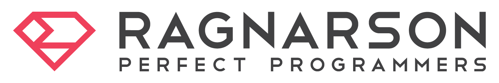
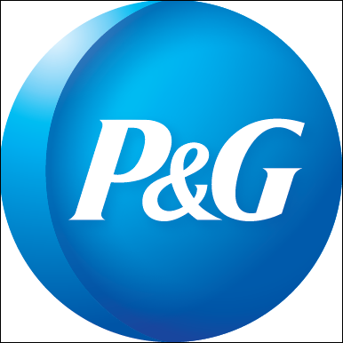
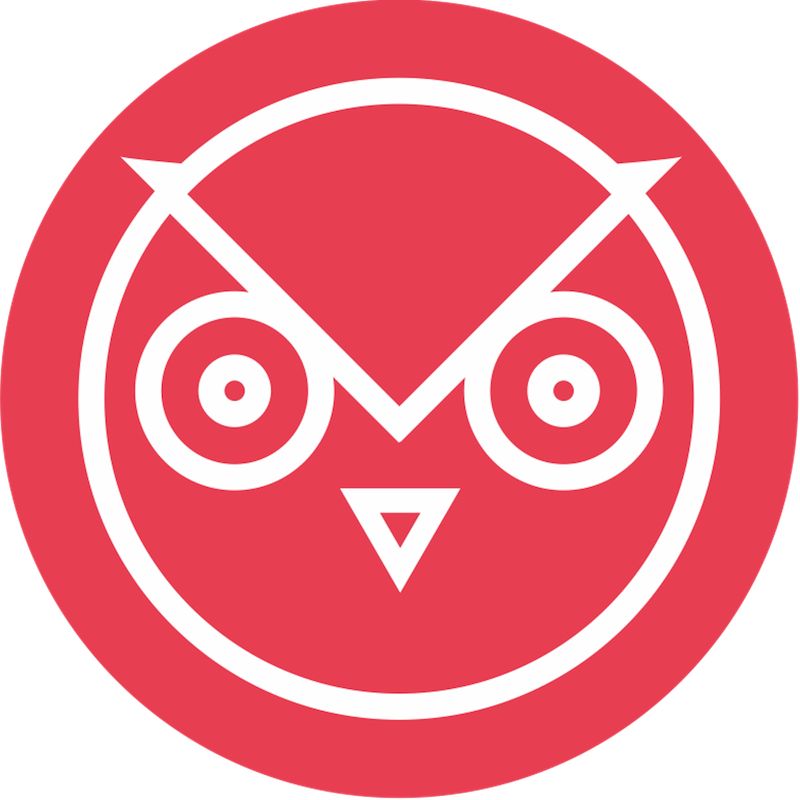
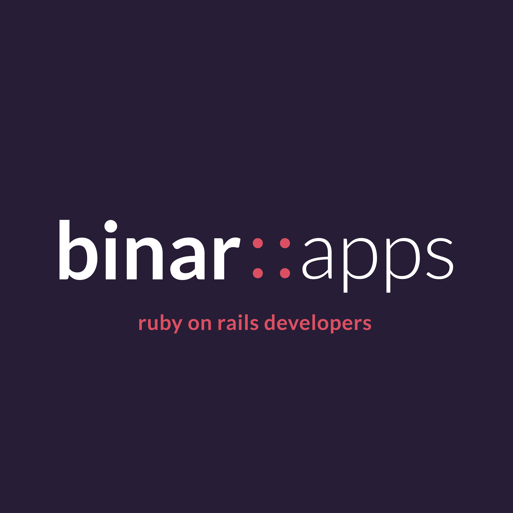
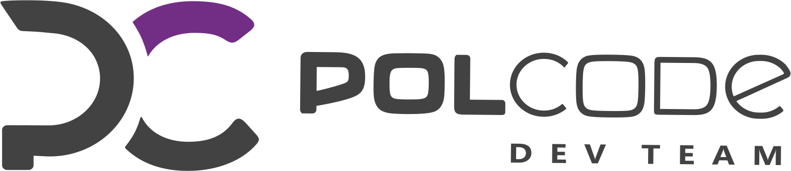
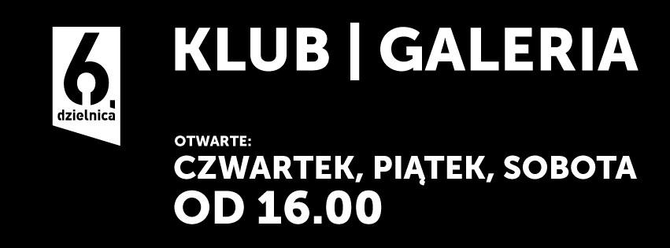
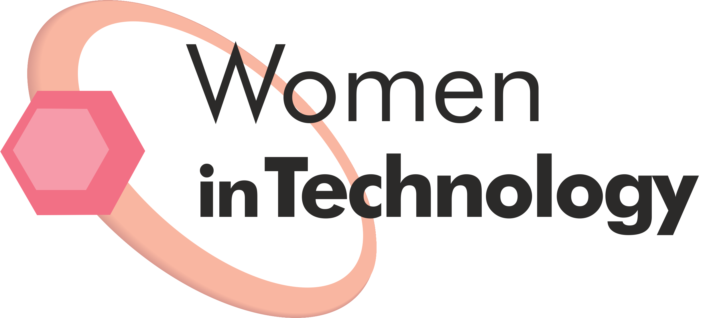
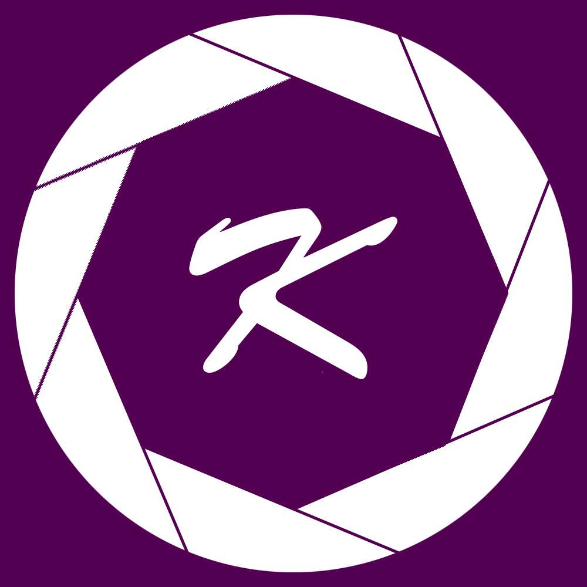

Hello world!
Rails Girls is coming to Łódź for the third time on 17th and 18th June! During the free two-day workshop we'll dive into the magical world of Ruby on Rails.
Applications are now closed.
You learn designing, prototyping and coding with the help from our coaches.
You need your own laptop, curiosity and a sprinkle of imagination!
Want to help? We are looking for sponsors and speakers. Email us.
Still not sure if this event is for you? See what happened last year.
| 18.00 - 19:00 |
Installation partyGet know the attendees a little bit before hand. Bring your laptop so we can install Ruby on Rails for you. |
|---|---|
| 19:00 - 19:30 |
Understanding Web AppsTomasz Stachewicz |
| 9:00 - 10:00 |
Registration, coffee and installation festWe'll give you breakfast and help configure Ruby on Rails on your laptop. |
|---|---|
| 10:00 - 10:15 |
WelcomeOutline of the day & a word from our sponsors |
| 10:15 - 13:00 |
WorkshopJumpstart your first web application |
| 13:00 - 14:00 | Lunch |
| 14:00 - 14:45 |
Lightning talks |
| 14:45 - 18:00 |
WorkshopExtend your application. |
| 21:00 |
AfterpartyOpen to everyone. Sponsors, boyfriends, girlfriends and developers that happen to be in the neighbourhood are more than welcome to join. |
How much does the workshop cost? Nothing, it's free! You just need to be excited!
Who is this aimed for? Women of any age with basic knowledge of working with a computer. We’ve had people of all ages taking part. Some of the speeches may be given in English, but group work will be done in Polish. Don't forget to bring your laptop.
Can men attend? Yes, but you need to be accompanied by an interested lady. Also, girls are given a priority.
I know how to program - how can I help? We’re also looking for people to be coaches. We’ll have a two hour workshop before the event to walk you through the curriculum. Email us!
Applications are open until June 7th. Apply here!
Notification of acceptance: June 10th 2016
Workshop location: Wydział Fizyki i Informatyki Stosowanej UŁ
ul. Pomorska 149/153, 90-236 Łódź
 Ragnarson is a team of more than 30 quality-oriented professionals, mostly Ruby and JavaScript developers. We specialise in building web applications and automated infrastructures. Our customers are mainly Western startups, who we help with the technical side of their businesses, top to bottom. In 2016 we will be celebrating our 10th anniversary.
 P&G Poland is the home of service centers supporting the company’s business units throughout the world. One of them is the Global Business Services, IT Office in Warsaw, which specializes in designing and implementing IT tools and systems. Big part of our organization work with solutions in the area of Business Intelligence (BI) and Big Data. These solutions are used by P&G employees all over the world. It is second largest P&G global centers after Cincinnati, providing this type of service.
 Prowly is a set of tools designed to help you build audiences around companies, brands and people. Our products make it easier to manage media relations, create great content and pitch your stories to relevant audiences. No matter whether you’re a freelancer or a big agency, working alone or in a team, Prowly will make your content more visible.
 BinarApps Web devs team with an attraction to RoR and web applications. They call us: smart as hell, handsome like Modern Talking. We’re good, so we work for startups and clients from Poland, Australia, Great Britain, Israel or Singapore.
 Polcode We've been operating on the web app market since 2007. Polcode is a dev house based in Poland whose core business is building, developing and modifying PHP and Ruby web applications.
iTaxi iTaxi is the fastest developing Polish network based on a taxi app. It is present in more than 100 towns and cities all over Poland, connecting large numbers of drivers from various firms as well as independent drivers. Select a car on the map, and just order it – then you can watch as the taxi makes its way to you. More on www.itaxi.pl
Crossweb is a website presenting various events connected with internet in a friendly way. The website covers: IT, UX, SEM, SEO and e-business. Crossweb mantions not only popular conferences and barcamps but also small meetings.
 6 książek o Ruby on Rails: Ruby on Rails. Tworzenie aplikacji WWW
6 książek o Ruby on Rails: Ruby on Rails. Tworzenie aplikacji WWW
Kod rabatowy dla uczestniczek: RGLODZ
Ważny: 15-30 czerwca
Zniżka 20% na tytuły wydawnictwa Helion.
SpotkaniaIT is a website collecting information about all IT events that are organised in Poland - from small evening meetings to big conferences. We're focused on doing eveything to create kind of community around IT events - we know that there's great number of people interested in learning new things and attending conferences and we get them know what's going on right now.
 6. Dzielnica to klub w samym sercu miasta: autorska kuchnia, miejsce spotkań, przestrzeń dla artystów, wypełniona sztuką, muzyką i wyjątkowymi ludźmi.
 Women In Technology is a community of women who share one common feature - love for technology. The group’s goal is to build an opinion that a woman can be passionate and prominent expert. As a community they support their members. WiT meetings and workshops are to exchange knowledge and experiences and to encourage women to join the technology world. Organization has existed since 2009 and has held meetings in Wrocław, Kraków, Warszawa, Gliwice, Poznań. Men are also welcome if they are interested in a topic of current meeting.
 Konrad - Professionally working in the IT and photography is his hobby. He most likes to take pictures while walking although recently he spends more time with the camera during events.
We help thousands of people, startups, bloggers, artists and companies order awesome stickers that are printed beautifully and ship fast.